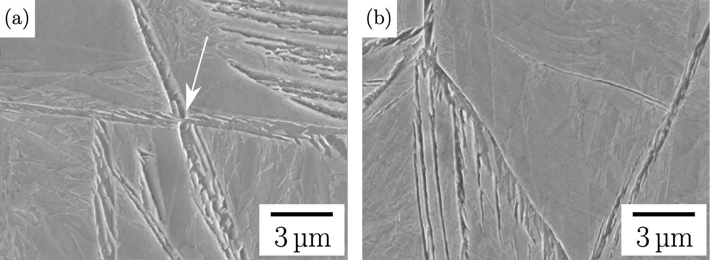
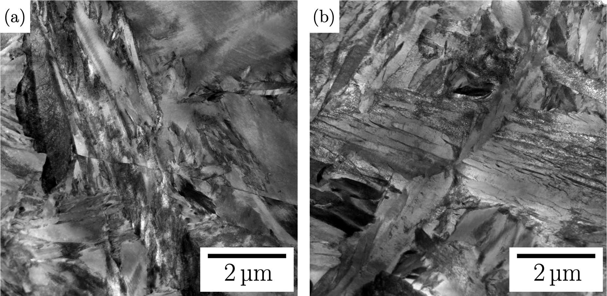
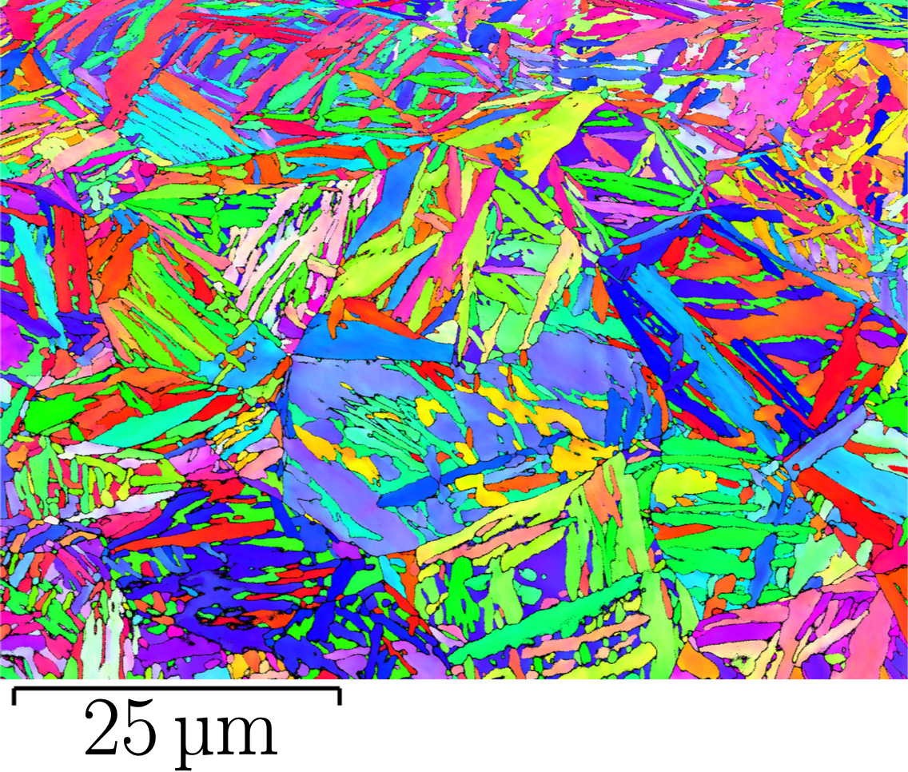
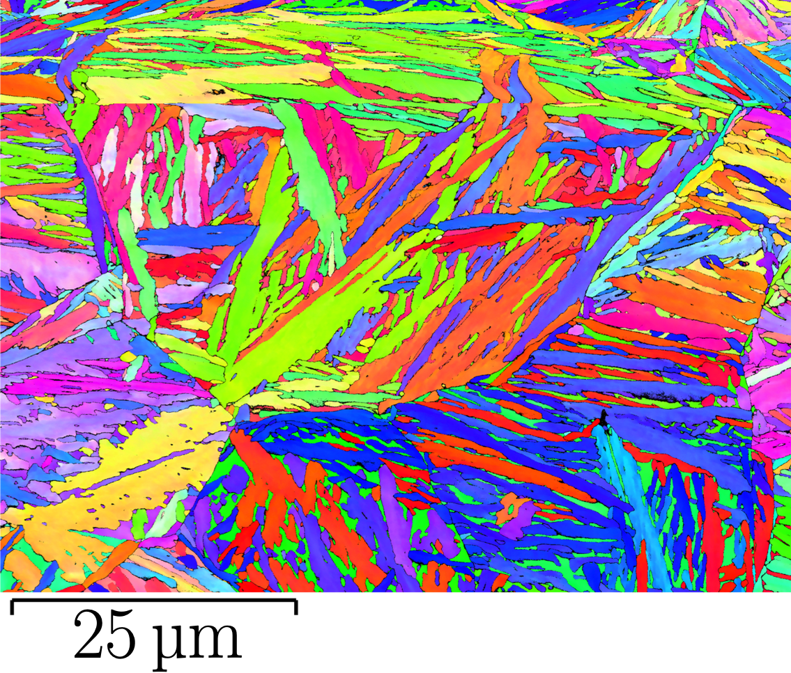

About

SEM of partial bainitic transformation, formed after transformation at 250°C for 10 h (a) with NiAl. The arrow indicates the intragranular nucleation of bainite from the NiAl precipitates. (b) Without NiAl, nucleation is from the austenite grain boundaries.

STEM bright field images of the transformed alloy. Microstructure of an interrupted bainitic transformation at 250°C for (a) 10 h. (b) 50 h, (b) shows the the nucleation of bainite from the NiAl precipitates where the bainite is seen to grow into many directions.

EBSD orientation image, sample transformed isothermally at 250°C for 150 h followed by cooling to ambient temperature. Bainite nucleated from NiAl promotes a more chaotic and finer bainite structure.

EBSD orientation image, sample transformed isothermally at 250°C for 150 h followed by cooling to ambient temperature. Grain boundary nucleated bainite.

Pole figures from a parent austenite grain, (a and b) {100}γ pole figure, (c and d) corresponding {100}α pole figure, more variants within the austenite grain (c).
Explanation for Video 1
Explanation for Video 2